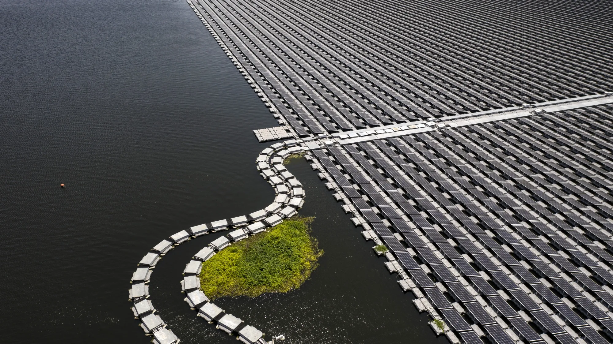

Post
Charging Forward
Most of the world’s new renewable capacity comes from China

Power houses
The world added a record 585 gigawatts of renewable power capacity in 2024, and China accounted for 374 GW of it, almost two-thirds. That record was broken in 2025: 692 GW worldwide, 440 GW of it in China.
China’s lead is recent. In 2010 it added 28 GW, about a third of the world’s total. By 2023 it was adding more than the rest of the world combined, and the International Energy Agency credited China with most of that year’s 50% jump in global installations. That makes global totals a poor guide to everywhere else, as the economic geographer Brett Christophers has warned:
Looking at global renewables growth rates is hugely misleading. There is not one single energy transition but a series of regional transitions of widely varying form, pace and scope. The outsized materiality of one—China’s—means global figures veil more than they reveal.
The turnaround is striking because China is also the world’s largest polluter. It overtook the United States as the biggest emitter of carbon dioxide in 2006, and it still burns more coal than the rest of the world combined.
Yale Environment 360 traces the shift back to the mid-2000s, when rising wages and severe air, soil and water pollution pushed Beijing to look beyond cheap, coal-powered manufacturing. The Renewable Energy Law of 2005 and the five-year plans that followed, such as the 12th Five-Year Plan (2011–2015), treated solar, wind, batteries and electric vehicles as strategic industries.
The bet paid off. China now makes more than 80% of the world’s solar panels and their components, and the scale of its factories has pushed prices down everywhere, making renewables affordable for poorer countries too. In 2025, BYD sold about 2.25 million battery-electric cars to Tesla’s 1.64 million, becoming the world’s biggest maker of electric vehicles.
